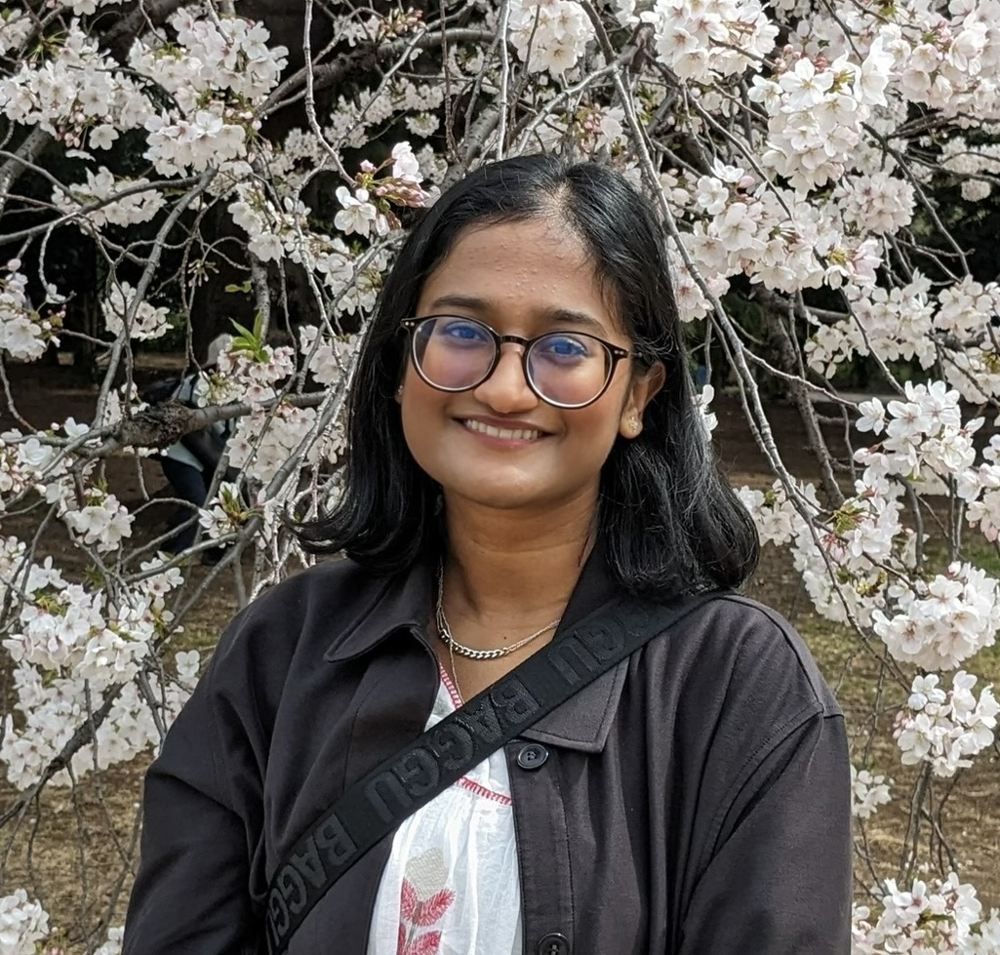

About Me
I am a PhD candidate in Computer Science at UC Riverside researching multi-fidelity probabilistic inference methods using MCMC and normalizing flows.
I am also an Associate Instructor passionate about accessible and engaging computing education, particularly for non-CS majors and interdisciplinary students.

Photo not available
Research & Publications
My research focuses on developing innovative multi-fidelity methods for probabilistic inference, particularly recursive multi-level approaches that improve efficiency for computationally expensive simulations.
Advisor: Dr. Christian Shelton | Institution: UC Riverside
FLARE MCMC: Fidelity-based Layer-Adaptive Recursive Proposals for MCMC
Harini Venkatesan, Christian Shelton,
Ming-Feng Ho, Simeon Bird, and Mengxuan Wu.
SIAM/ASA Journal on Uncertainty Quantification
,
In Press, 2026.
PDF
News
UCR Academy of Distinguished Teaching Honorable Mention
Received an Honorable Mention for the 2026 Graduate Student/Postdoctoral Instructor of Record Award from the UC Riverside Academy of Distinguished Teaching in recognition of contributions to undergraduate computing education and student engagement. May 2026.